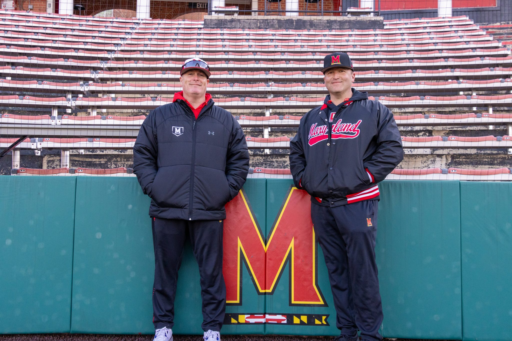
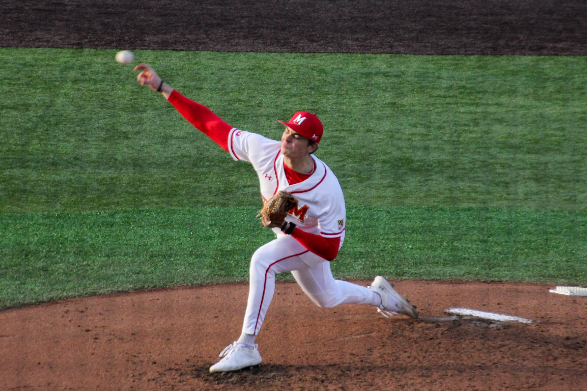

Experience
- The Diamondback
- Baseball Beat Writer (Jan. 2024-Present)
- Sports General Assignment Beat Writer (Aug. 2023- Dec. 2023)
- Under the Shell Podcast (Sept. 2022-Present)
- Co-hosts and founded a weekly, hour long podcast analyzing University of Maryland Athletics and interviews with members of Maryland Athletics
- Terrapin Sports Central
- Women's Basketball Beat Writer (Sept. 2023-March 2024)
- Baseball Beat Writer (Feb. 2023-June 2023)
- Field Hockey Beat Writer (Sept. 2022- Nov. 2022)
- PressBox Online
- Summer Intern (May 2023- Aug. 2023)
- Wrote weekly articles for the online publication
- Edited, fact checked, and proofread articles published online
Johnny Poss, Jimmy Jackson bring local ties, diverse experiences to Maryland baseball
For The Diamondback
February 22, 2024
Jimmy Jackson was driving home from a recruiting trip in June 2023 when his phone buzzed. Matt Swope was calling.
Swope touched base with the James Madison assistant about a week earlier to tell him a coaching change may occur at Maryland. He wanted Jackson to be his pitching coach if he got the job.
This time, Swope had more pressing news. A change was imminent. He wanted to confirm Jackson was committed to Maryland before Swope’s promotion became official. Jackson said he was. Maryland made the move official the next day, then Jackson received another phone call from a different, yet familiar voice.
“Hey man,” said Johnny Poss, then head coach at Division III Wilson College. “You’re gonna be a Terp?”
Jackson, still trying to keep his unofficial move quiet, acted confused.
“I’ve known Swope for like 25 years,” Poss said. “I’m going too.”
Baseball has connected Swope, Jackson and Poss for two decades. Now, their divergent paths have intersected in College Park. They form a staff with deep local ties — valuable connections that shape a recruiting emphasis on keeping the region’s talent home.
Read more here
Meet Evan Johnson, Maryland baseball’s No. 1 fan

For The Diamondback
March 28, 2024
A woman’s faint voice echoed across Bob “Turtle” Smith Stadium from the first baseline bleachers.
“Let’s go, JMU!”
Evan Johnson stiffened his back. Perched behind home plate, donning a cream-colored Maryland jersey with a cursive red logo sprawled across the chest, he retaliated.
“Let’s go, Maryland!”
It was only the third batter of a cold, early-March nonconference game. But Johnson had to take command of what he calls his ballpark.
“You’re not out-yelling me,” Johnson said. “That’s not going to happen.”
He was the only one bellowing the chant in the sparsely-filled stadium. But the surrounding Maryland fans clapped to the beat of his roar.
The 26-year-old Bowie native tries to attend as many Maryland baseball games as possible. He grew up a fan of Washington’s professional teams, but intensified his support for Terps baseball in recent seasons. The team has even recognized his energy.
“We love him a lot,” junior outfielder Elijah Lambros said.
In a stadium that seats fewer than 3,000 without a jumbotron, Johnson strives to establish a home-field advantage with his conglomerate of dances and cheers. He knows his antics draw attention. Johnson doesn’t mind.
Read more here
Va. cross-country: Senior propels West Springfield girls; Woodbridge boys prevail

For The Washington Post
November 11, 2023
As a freshman, Aidan MacGrath told her coach, “I’ll never be able to do that.” Skinny and small, as she described herself, the West Springfield High runner did not believe she could win a state competition.
Three years later she proved her younger self wrong, darting to a first-place finish at the Virginia Class 6 girls’ cross-country meet to cap her senior season and vault the Spartans to a team victory with 62 points, just ahead of Robinson (64) and W.T. Woodson (65).
“It’s like your dream came true,” MacGrath said after finishing the 5K race at Oatlands in Leesburg in 18 minutes 11 seconds. “… I’m just happy I was able to push through it and hear everyone cheering and coming first.”
MacGrath began consistently going on long runs her junior year to strengthen her body, she said. She also started to monitor what she was eating to keep herself in a healthy physique.
“I just stopped caring, really, overall about what other people said and what my body looked like versus what a healthy body looked like,” she said. “Once I noticed all of that and I actually put in the work to do what’s right to keep myself healthy is when I started seeing all the work pay off and got me here.”
The Spartans secured their second straight team title for the first time in school history — even after falling to rival W.T. Woodson in the district and region championships.
“We didn’t win the small prize and we didn’t win the medium prize, but we won the large prize, and that’s the one that goes down in history,” Coach Chris Pellegrini said.
Read more here
Maryland baseball’s Brayden Martin extends uncle Walt Williams’ legacy in another sport

For The Diamondback
April 18, 2024
Brayden Martin went to Uncle Walt’s house any weekend he could growing up. His cousins gravitated toward the full-length basketball court in the backyard, where they clanked shots off the glass backboards.
His uncle — Maryland men’s basketball great Walt Williams — joined in and taught them his patented hesitation crossover. It was the same move the former star showcased as a Terp and took with him to his 11-year NBA career. Williams’ jerseys and photos from his playing career littered his basement walls for a young Martin to admire.
But basketball was never Martin’s favorite sport. And the University of Maryland wasn’t originally his preferred college.
The freshman committed to Maryland in April 2023 after being committed to Florida State the previous two years. The move kept the Bowie native close to family and helped him continue his uncle’s legacy as a Terp.
“It definitely feels surreal sometimes,” Martin said. “I’m actually playing baseball at the University of Maryland.”
His uncle pushed him to come to Maryland even after he committed to FSU as a high school sophomore. Martin said whenever he was at his uncle’s house, Williams joked that he should reach out to Maryland one last time.
Williams said he kept his fingers crossed when the Seminoles fired their coach during Martin’s junior year at St. John’s College High School. The new staff didn’t watch the high school infielder play a single game, his father said. Martin felt it wasn’t a good fit and decommitted his senior year.
Williams, affectionately known as “The Wizard,” stayed home when he played for the Terps in 1988-1992 after growing up in Temple Hills, Maryland. He told his nephew how enjoyable it was starring in front of his family in Cole Field House.
Read more here
Kevin Keister coveted Maryland baseball’s captaincy. He earned it after years of growth.

For The Diamondback
March 7, 2024
Maryland baseball’s players cramped into Matt Swope’s basement for their team Christmas party last December. Terps memorabilia stretched across the walls while players and coaches donned ugly Christmas sweaters.
Some stood, others sat on the U-shaped couch and the rest settled on the carpet. Maryland men’s basketball’s game against Indiana played on the TV.
Swope stood before the congregation at the end of the night. The coach had an announcement.
He revealed a white Maryland jersey with Kevin Keister’s name on the back and a red No. 3 engraved — a number reserved for the team captain that the infielder coveted.
“Three has been the number that the captain wears and this year, we think the kid that deserves to wear it is [Kevin],” Keister recalled Swope saying.
Keister and Swope grew together over the last three years and have a shared competitiveness. That fierce drive created friction at first, but culminated in Keister being named the team’s leader. It’s a familiar position for the shortstop.
Swope was the first Maryland coach to call Keister during his high school career. He met the then-hitting coach on a visit in September 2018 and committed later that month.
Keister, who played second base his first three years with the Terps, didn’t see much time as a freshman. He recorded only four hits — each of them singles — all season.
Swope sought more power from Keister’s approach. The infielder recognizes now that he was a weak hitter entering college, but was satisfied with his swing and content with only hitting singles. The two argued over fine-tuning his approach.
Read more here
As Maryland baseball’s go-to midweek starter, Ryan Van Buren has a newfound confidence
For The Diamondback
March 13, 2024
Ryan Van Buren watched Scott Seeker crush a ball over the right field wall. It was only the second batter he faced against Mount St. Mary’s on Tuesday.
But the right-hander didn’t dwell on it. His focus shifted to the next batter.
Van Buren held the Mountaineers scoreless in his ensuing 4 2/3 innings, allowing just three hits. His dominance kept Maryland baseball within striking distance amid an early offensive drought.
After being held scoreless through six innings, the Terps erupted in the final three. They tallied six runs on five hits, securing a 6-4 win over Mount St. Mary’s at E.T. Straw Family Stadium.
Maryland’s pitchers labored in most of their midweek games last season. The staff combined for a 7.26 ERA and surrendered five or more runs in all but two of 14 games.
Van Buren has been the catalyst for midweek pitching improvements. He sports a 3.32 ERA in four starts. The Terps are undefeated in those games, and have lost just one midweek game this season.
The junior worked with pitching coach Jimmy Jackson over the offseason to enhance his pitch arsenal. The two scrapped his two-seam fastball in favor of a four-seam fastball, which aligned more with Van Buren’s natural over-the-top arm slot.
The switch added velocity and precision to his fastball. Van Buren also incorporates a curveball with a larger drop to complement his refined “power slider” and changeup.
Read more here